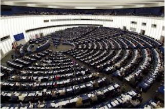

Skupaj z Inštitutom za študije Zahodne Sahare v okviru humanitarne pomoči za begunska taborišča Zahodnih Sahark in Saharcev zbiramo:
- - antibiotike,
- - "ubijalce" bolečin (aspirin, lekadol, saridon ipd.),
- - vitamine,
- - očala - korekcijska in sončna;
- - oblačila in čevlje,
- - televizorje,
- - računalnike in računalniško opremo,
- - medicinsko opremo,
- - opremo za šole (mize, stoli, table, igrala ipd.),
- - sončne kolektorje,
- - spalne vreče,
- - odslužene alpinistične vrvi.
Vsa zdravila predamo zdravniškemu osebju v Zahodni Sahari in so pod nadzorom!
Humanitarni konvoj iz Slovenije, Avstrije ali Italije je organiziran vsaj enkrat letno.
iszs.wordpress.com
Prosimo, sporočite nam, če je pod vašo streho odveč kaj od zgoraj naštetega, da se dogovorimo za prevzem.
HVALA!
In še nekaj malega o Zahodni Sahari:
Zahodna Sahara je poslednja afriška kolonija. Gre za slabo poznano in pogosto pozabljeno območje, ki je bogato z naravnimi viri. Saharke in Saharci živijo zadnjih osemintrideset let v begunskih taboriščih v alžirski Sahari, v okolju, ki je nedostojno človeškega življenja. Nenehno so soočeni z zapleti, ki spremljajo konflikt: zanikanje osnovnih človekovih pravic, otežkočen dostop do pitne vode, hrane in bivališča, zaposlitve in v jedru: pravice do samoodločbe. Vprašanje samoodločbe je bilo osrednja tema za Zahodno Saharo vse od sprejema resolucije Združenih Narodov decembra 1966. Poleg tega so pravice, ki so garantirane Saharkam in Saharcem, v nasprotju z mankom njihove implementacije na sodiščih po svetu. Tovrsten kontrast je tako obsežen, da se je mogoče legitimno vprašati, ali ne bi bilo smotrno na odgovornost poklicati tudi (lokalnih in mednarodnih) sodišč, ki onemogočajo uveljavitev pravnih zahtev.
Danes, ko se okupacija nadaljuje, se Saharke in Saharci, ki so ostali na zasedenih ozemljih (l. 75 je bila večina Sahark in Saharcev pregnana v sosednjo Alžirijo, kjer še vedno živijo kot begunke in begunci) soočajo z marokanizacijo, to je s propadanjem svoje kulture, vere in tradicije ter še vedno doživljajo eno najhujših kršitev človekovih pravic na svetu. Kljub vsemu se po skoraj štiridesetih letih okupacije še vedno niso odpovedali upanju in nenasilnemu boju za svoje pravice.
»Več žensk v evropski politiki – več žensk 2014« / »More Women in European Politics- More Women in 2014«

Projekt »Več žensk v evropski politiki – več žensk 2014« izvaja 14 nevladnih organizacij iz 14 držav članic EU. Projekt koordinira LUDEN , organizacija s sedežem v Bruslju, poleg organizacije iz Slovenije pa v njem sodelujejo še organizacije iz Bolgarije, Češke, Estonije, Grčije, Madžarske, Italije, Latvije, Litve, Romunije, Slovaške, Švedske in Združenega kraljestva.
Projekt sofinancira Evropska komisija v okviru programa »Človekove pravice in državljanstvo«.
www.ludenet.org
LUDEN v mrežo združuje svete urbanih lokalnih skupnosti in nevladne organizacije, ki delujejo na področju regeneracije okolja na nacionalni, regionalni in evropski ravni.
Utemeljitev projekta
Razlog za izvedbo projekta je še vedno neenak položaj žensk in moških v družbi. Kljub napredku, doseženemu v zadnjih treh desetletjih, se ženske še vedno soočamo s t.i. steklenimi stropovi, diskriminacijo na osnovi spola, neenakim plačilom, nasiljem ipd.
Zastopanost žensk v političnih organih odločanja v vseh državah članicah EU je še vedno premajhna. Ženske v povprečju predstavljajo samo 24% članic in članov nacionalnih parlamentov. Na regionalni ravni ženske predstavljajo 31% članic in članov regionalnih svetov oziroma skupščin in 32% regionalnih izvršilnih oblasti. In samo 15% lokalnih ter 11% regionalnih oblasti vodijo ženske.
Evropski parlament ima »najbolj« uravnoteženo sestavo; 35% žensk in 65% moških. Ta odstotek se močno razlikuje po posameznih državah članicah: Malta npr. v svoji kvoti poslank in poslancev nima niti ene ženske, medtem ko Finsko zastopa 8 evropskih poslank iz skupne kvote trinajstih, kar predstavlja dobrih 61%.
Enaka zastopanost obeh spolov v procesih odločanja je hkrati vprašanje kvalitete in enakosti. Uravnotežena zastopanost obeh spolov prispeva k večji raznolikosti in posledično k boljšemu odločanju. Po drugi strani pa uravnotežena zastopanost obeh spolov zagotavlja enakost, ki je opredeljena v Listini EU o temeljnih pravicah (European Union Charter of Fundamental Rights).
Cilji projekta
Ključno za dosego enakega položaja žensk in moških je vključitev žensk v politiko. Zato je osnovna ideja projekta sodelovanje nevladnih organizacij s področja enakosti spolov s političnimi strankami. Tako v projektu iz vsake države sodeluje po ena nevladna organizacija, katere partnerka je praviloma politična stranka.
V Sloveniji se je v projekt vključil Inštitut za družbeno kreativnost, njegova partnerska organizacija pa je stranka Socialnih demokratov oziroma njen Ženski forum.
Osnovni cilj projekta je zagotoviti več ženskih kandidatk na evropskih volitvah in posledično več žensk v Evropskem parlamentu. V projektu naj bi sodelovalo nekje med 10.000 do 14.000 žensk iz 14 držav članic EU. Pri tem bomo posebno pozornost namenili mladim ženskam (≤ 35 let) - skušali jih bomo pritegniti k večji udeležbi na volitvah, korak dalje pa bo njihova vključenost na kandidatnih listah za evropske volitve.
Politične stranke so ključne pri promociji žensk v politiki. Imajo moč, da povabijo ženske k sodelovanju in jih nominirajo za pomembna politična mesta. Zaradi tega v projektu »Več žensk v evropski politiki – več žensk 2014« sodelujejo tudi posamezne politične stranke oziroma njihova ženska združenja. Želimo jih spodbuditi k vzpostavitvi inštrumentov, kot so obvezne kvote ali sistem zadrge, ki bodo povečali udeležbo žensk v politiki.
Aktivnosti projekta
V okviru projekta bomo v vseh 14 državah, iz katerih prihajamo partnerske organizacije, izvedli naslednje aktivnosti:
- 1. Vzpostavitev skupine oziroma mreže žensk v politiki. K sodelovanju bomo povabili predstavnice ženskih organizacij, političnih strank in vse ostale zainteresirane.
- 2. Priprava analize stanja o vključenosti žensk v politiko.
- 3. Sodelovanje v transnacionalni izmenjavi primerov dobrih praks na področju pristopov za povišanje deleža žensk v politiki.
- 4. Izvedba različnih aktivnosti, s katerimi želimo spodbuditi vključevanje žensk v politiko.
- 5. Vzpostavitev skupin na socialnih omrežjih facebook in twitter, namenjenih predvsem mladim ženskam.
- 6. Spodbujanje političnih strank, da spremenijo svoje delovanje na način, da pritegnejo ženske kot članice in aktivistke, predvsem pa kot kandidatke na lokalnih, nacionalnih in evropskih volitvah.
- 7. Podpora transnacionalni skupini žensk, ki želijo kandidirati na volitvah v Evropski parlament.
Pričakovani rezultati so:
- povečanje števila žensk, ki se bodo udeležile volitev v Evropski parlament,
- več žensk na kandidatnih listah za Evropski parlament oz. v primeru Slovenije, ki že ima uzakonjeno zadrgo, več žensk na 1. mestu kandidatnih list,
- aktivnejša udeležba mladih žensk,
- dolgoročna pozitivna naravnanost političnih strank do vprašanja enakosti spolov.
Projekt se je začel izvajati novembra 2012 in bo trajal do volitev v Evropski parlament 2014.
Seznam vključenih organizacij
»Več žensk v evropski politiki – več žensk 2014«
»More Women in European Politics - More Women in 2014«
Seznam vključenih organizacij
-
Co beneficiary partner: LUDEN
-
Co beneficiary partner: Balkan Assist Association
Associate partner: Zelenite (the Greens) Political Party
-
Co beneficiary partner: Forum 50 %
Associate partner: Czech Social Democratic Party (CSDP)
-
Co beneficiary partner: Pro Patria and Res Publica Union Women’s Organisation
Associate partner: Pro Patria and Res Publica Union
-
Co beneficiary partner: Kendro Merimnas Oikoyenias kai Pediou (Family and Childcare Centre) - KMOP
Associate partner: Research Center for Gender Equality (KETHI)
-
Co beneficiary partner: Regional Social Welfare Resource Center of Budapest / BSZF
Associate partner: Free People for Hungary – Liberal Party
-
Co beneficiary partner: Sinistra Ecologia e Libert?
Associate partner: Sinistra Ecologia e Libert? Women’s Group
-
Co beneficiary partner: Women’s NGOs Cooperation Network of Latvia (WNCNL)
Associate partner: Social Democrat Party CONCORD
Associate partner: Zatlers Reforms Party
-
Co beneficiary partner: Center for Equality Advancement
Associate partner: Lithuanian Social Democratic party
-
Co beneficiary partner: Intercultural Institute of Timisoara
Associate partner: Civic Conservative Party
-
Co beneficiary partner: Alliance of Women in Slovakia
Associate partner: Civic Conservative Party
-
Co beneficiary partner: Institute for Social Creativity
Associate partner: Social Democrats
-
Co beneficiary partner: Liberal Women in Sweden
Associate partner: Swedish Liberal Party
-
Co beneficiary partner: Ballybeen Women's Centre Ltd
Associate partner: Democratic Unionist Party
- Belgija
- Bolgarija
- Češka
- Estonija
- Grčija
- Madžarska
- Italija
- Latvija
- Litva
- Romunija
- Slovaška
- Slovenija
- Švedska
- Združeno kraljestvo